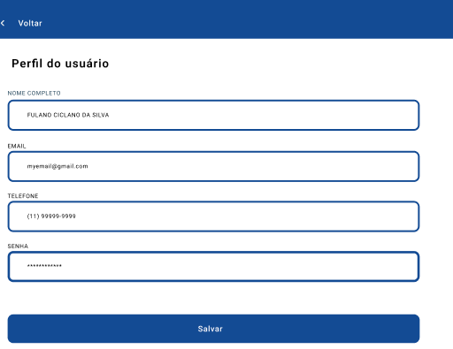

Introdução
Informações básicas do projeto como nome e membros da equipe.
Informações Gerais
- Projeto: Finance
- Repositório GitHub: Trabalho interdiciplinar Finance
- Membros da equipe:
Contexto
Detalhes sobre o espaço de problema, justificativas e os objetivos do projeto.
Problema
O problema está na falta de controle financeiro pessoal, que decorre da escassa educação financeira e da ausência de ferramentas eficazes para gerenciar as finanças. Muitas pessoas têm dificuldades em entender e monitorar seus gastos, resultando em um ciclo de endividamento contínuo e falta de economias para emergências ou objetivos futuros.
Essa falta de controle financeiro também impacta negativamente a qualidade de vida, causando estresse, ansiedade e instabilidade financeira. Sem uma compreensão clara de suas finanças e sem as ferramentas adequadas para gerenciá-las, as pessoas ficam mais vulneráveis a situações de emergência financeira e têm dificuldade em alcançar seus objetivos de longo prazo, como comprar uma casa, fazer uma viagem ou se aposentar com tranquilidade. Portanto, é necessário uma abordagem ampla para capacitar as pessoas a tomarem controle de suas finanças, interromperem o ciclo de endividamento e alcançarem uma maior estabilidade financeira e bem-estar.
Este website será utilizado em um contexto em que as pessoas buscam uma solução prática e eficaz para gerenciar suas finanças pessoais de forma mais consciente e organizada. Os usuários provavelmente enfrentam desafios relacionados ao controle de gastos, acompanhamento de receitas e despesas, e deseja alcançar maior segurança financeira e estabilidade em suas vidas. Eles podem estar buscando uma ferramenta acessível e fácil de usar que os ajude a criar e acompanhar orçamentos, identificar áreas de economia, e entender melhor seus hábitos de consumo para fazer escolhas financeiras mais informadas. Além disso, os usuários podem estar interessados em aprender mais sobre educação financeira, investimentos e estratégias para alcançar seus objetivos financeiros de longo prazo.
Objetivos
Objetivo:
Desenvolver um site para controle financeiro pessoal com o objetivo de capacitar os usuários a alcançar segurança financeira e realizar seus sonhos, fornecendo ferramentas de gestão financeira e recursos educacionais.
Objetivos Específicos:
Criar uma plataforma intuitiva e acessível que permita aos usuários acompanhar suas finanças, criar orçamentos personalizados e visualizar seu progresso em direção aos seus objetivos financeiros. Fornecer conteúdo educacional relevante, incluindo dicas de economia, investimento e gestão de dívidas, para capacitar os usuários a tomar decisões financeiras mais informadas e eficazes.
Justificativa
A criação de um sistema de controle de finanças é motivada pela necessidade de organização financeira, prevenção de gastos desnecessários, planejamento e orçamento. Esse sistema facilita a tomada de decisões informadas, análise de dados e identificação de padrões financeiros.Para indivíduos, promove educação financeira e disciplina. Os objetivos específicos do sistema incluem facilidade de uso, customização, segurança de dados, integração com outras ferramentas e funcionalidades avançadas, visando atender às diversas necessidades dos usuários e proporcionar uma gestão financeira eficaz.
Público-alvo
O website será utilizado por pessoas de diferentes faixas etárias e origens socioeconômicas que compartilham o desejo de melhorar sua saúde financeira e alcançar uma maior estabilidade e segurança em suas vidas.
Concepção (Design Thinking)
Detalhes do processo de discovery do projeto.
Processo de Design Thinking
O arquivo que se segue apresenta o resultado desse processo.
Especificações do Projeto
Documentação das especificações do projeto.
Histórias de Usuários
Com base na análise das personas foram identificadas as seguintes histórias de usuários:
EU COMO...PERSONA |
QUERO/PRECISO...FUNCIONALIDADE |
PARA...MOTIVO/VALOR |
|---|---|---|
| Usuário do sistema | Registrar minhas despesas | Ter maior controle dos meus gastos e saber onde preciso economizar |
| Usuário do sistema | Consultar dicas de investimentos | Conseguir aumentar minha renda e ter maior estabilidade financeira |
| Usuário do sistema | Adicionar os dados dos meus cartões | Controlar quanto estou gastando em cada e conseguir visualizar em um só local as suas informações |
| Usuário do sistema | Registrar meus ganhos e entradas | Ter controle do quanto estou recebendo e com isso ter controle do quanto posso gastar |
Requisitos
As tabelas que se seguem apresentam os requisitos funcionais e não funcionais que detalham o escopo do projeto.
Requisitos Funcionais
| ID | Descrição do Requisito | Prioridade |
|---|---|---|
| RF-001 | Cadastrar usuários | ALTA |
| RF-002 | Validar cadastro | ALTA |
| RF-003 | Permitir que o usuário cadastre seus gastos e receitas | ALTA |
| RF-004 | Emitir um relatório com todos os gastos e receitas em um periodo selecionado | MÉDIA |
| RF-005 | Permitir que o usuário cadastre os dados do seus cartões para controle de suas contas | ALTA |
| RF-006 | Definir metas e objetivos relacionados a redução de despesas e aumento de ganhos | MÉDIA |
| RF-007 | Exibir tabelas e gráficos para maior ilustração dos gastos do usuário | ALTA |
| RF-008 | Mostrar dicas de investimento e formas de aplicar o capital de forma mais segura | ALTA |
Requisitos Não-Funcionais
| ID | Descrição do Requisito | Prioridade |
|---|---|---|
| RNF-001 | O site deve ter bom desempenha e realizar as suas transições no máximo 3s | MÉDIA |
| RNF-002 | Os dados sensíveis dos usuários devem estar criptografados para maior segurança | ALTA |
| RNF-003 | O sistema deve ser de fácil manutenbilidade | MÉDIA |
| RNF-004 | O site deve ser responsível, podendo ser utilizado em diversos dispositivos | MÉDIA |
| RNF-005 | Deve ser de fácil utilização, aumentando a quantidade de usuários que podem utilziar o sistema | MÉDIA |
Projeto de Interface
Artefatos relacionados com a interface e a interacão do usuário na proposta de solução.
User/Screen Flow e Protótipo interativo
Artefatos relacionados com a interface e a interacão do usuário na solução proposta.
Prototipo interativo:
https://www.figma.com/file/UoB0D9LF0RQa7rtbaMWVqZ/Mockup-Telas-(Copy)?type=design&node-id=2001%3A105&mode=design&t=dIPAKvm7AuY63efD-1Wireframes
Protótipo de telas do sistema em baixa fidelidade (rascunhos).
Os Wireframes são protótipos das telas da aplicação usados em design de interface para sugerir a estrutura de um site web e seu relacionamentos entre suas páginas. Um wireframe web é uma ilustração semelhante ao layout de elementos fundamentais na interface. 
Wireframe
https://www.figma.com/file/UoB0D9LF0RQa7rtbaMWVqZ/Mockup-Telas-(Copy)?type=design&node-id=2001%3A105&mode=design&t=dIPAKvm7AuY63efD-1Metodologia
Detalhes sobre a organização do grupo e o ferramental empregado.
Ferramentas
Relação de ferramentas empregadas pelo grupo durante o projeto.
| Ambiente | Plataforma | Link de Acesso | Repositório de código | GitHub | https://github.com/ICEI-PUC-Minas-PPLES-TI/plf-es-2024-1-ti1-0385200-finance |
|---|---|---|
| Protótipo Interativo | Figma | https://www.figma.com/file/UoB0D9LF0RQa7rtbaMWVqZ/Mockup-Telas-(Copy)?type=design&node-id=2001%3A105&mode=design&t=pMYLSZPil1btUqum-1 |
Gestão do Projeto
Divisão de papéis no grupo e apresentação da estrutura da ferramenta de controle de tarefas (Kanban).
Scrum Master: Matheus Gaston Viana Silveira
Product Owner: Luiz Eduardo Oliveira Faria
Desenvolvedores: Arthur Almeida Scalioni Salles, Arthur Luiz Alves Soares, Guilherme Henrique Costa Alves, Lucas de Souza Pereira
Responsável pela documentação: Arthur Luiz Alves Soares
O controele do Kanban está sendo realizado pelo Trello, sendo cada um responsável por gerir e movimentar suas issues.
Controle de Versão
Estrutura do fluxo de trabalho no ambiente do GitHub.
Discuta como a configuração do projeto foi feita na ferramenta de versionamento (GitHub). Exponha como a gerência de tags, merges, commits e branchs é realizada. Discuta como a gerência de issues foi realizada.

Versão 1.1
Solução
Esta seção apresenta todos os detalhes da solução criada no projeto.
Apresente cada uma das funcionalidades que a aplicação fornece tanto para os usuários quanto aos administradores da solução.
Inclua, para cada funcionalidade, itens como: (1) titulos e descrição da funcionalidade; (2) Estrutura de dados associada; (3) o detalhe sobre as instruções de acesso e uso.
Video do Projeto
O vídeo a seguir traz uma apresentação do problema que a equipe está tratando e a proposta de solução.
O video de apresentação é voltado para que o público externo possa conhecer a solução. O formato é livre, sendo importante que seja apresentado o problema e a solução numa linguagem descomplicada e direta.
Utilize o recurso de compartilhamento via embed e inclua o vídeo logo abaixo.
Funcionalidades
Esta seção apresenta as funcionalidades da solução.
Apresente cada uma das funcionalidades que a aplicação fornece tanto para os usuários quanto aos administradores da solução.
Inclua, para cada funcionalidade, itens como: (1) titulos e descrição da funcionalidade; (2) Estrutura de dados associada; (3) o detalhe sobre as instruções de acesso e uso.
Funcionalidade 1 - Login
Permite o cadstros de usuários
- Cadastros: Login
- Instruções de acesso:
- Abra o site e efetue o cadastro
- Caso já possua cadastros, insira os dados de login
- Em seguida, clique em login
Funcionalidade 2 - Visão Geral
Permite a visualização da Visão Geral
- Instruções de acesso
- Abra o site e efetue o Login cadastro
- Clique em Visão Geral
Funcionalidade 3 - Estatísticas de Gastos
Permite a visualização e controle das Estatísticas de Gastos
- Instruções de acesso
- Abra o site e efetue o Login cadastro
- Clique em Visão Geral
- Navegue até Estatísticas de Gastos

Funcionalidade 4 - Cartões e Contas
Permite a visualização e controle dos Cartões e Contas
- Instruções de acesso
- Abra o site e efetue o Login cadastro
- Clique em Visão Geral
- Navegue até Cartões e Contas
Funcionalidade 5 - Metas
Permite a visualização e controle das Metas
- Instruções de acesso
- Abra o site e efetue o Login cadastro
- Clique em Visão Geral
- Navegue até Metas
Funcionalidade 6 - Cadastro de Usuários
Permite o cadastro de usuários
- Instruções de acesso
- Abra o site e clique em "Não tem cadastro? Cadastre-se aqui"
- Preencha o formulário com os dados e salve a operação
- Faça o login

Funcionalidade 7 - Cadastro de Cartões
Permite o cadastro de cartões do usuário
- Instruções de acesso
- Abra o site e navegue até Cartões e Contas"
- Clique em adicionar na sessão de Cartão
- Preencha o formulário
Funcionalidade 8 - Cadastro de Entradas e Saídas
Permite o cadastro de entradas e saídas
- Instruções de acesso
- Abra o site e navegue até Cartões e Contas"
- Clique em Entradas/Saídas na sessão de Cartões
- Preencha o formulário
Funcionalidade 9 - Cadastro de Contas
Permite o cadastro de cartões do usuário
- Instruções de acesso
- Abra o site e navegue até Cartões e Contas"
- Clique em adicionar na sessão de Contas
- Preencha o formulário
Funcionalidade 9 - Cadastro de Metas
Permite o cadastro de metas
- Instruções de acesso
- Abra o site e navegue até Metas"
- Clique em adicionar na sessão de Metas
- Preencha o formulário
Estruturas de Dados
Descrição das estruturas de dados utilizadas na solução com exemplos no formato JSON.
Apresente as estruturas de dados utilizadas na solução tanto para dados utilizados na essência da aplicação quanto outras estruturas que foram criadas para algum tipo de configuração
Nomeie a estrutura, coloque uma descrição sucinta e apresente um exemplo em formato JSON.
Estrutura de Dados - Usuários
Usuários do Sistema
{
"usuarios": [
{
"id": "187cb7e5-e097-4224-8bc7-b610c855e2b1",
"login": "admin",
"senha": "123",
"nome": "Administrador do Sistema",
"email": "admin@abc.com"
},
Estrutura de Dados - Contas
Contas do Sistema
{
"contas": [
{
"nome": "Conta de Luz",
"valor": "R$ 200,90",
"vencimento": "14/04/2022",
"status": "Pendente"
}
}
Estrutura de Dados - Cartões
Cartões do Usuários
"cartoes": [
{
"id": "1",
"bandeira": "Visa",
"final": "4444",
"titular": "Micaela Davila",
"validade": "01/27"
},
Estrutura de Dados - Transações
Transações do Usuários
"transacoes": [
{
"id": "1",
"nome": "Pix Lucas",
"valor": "100.00",
"data": "20/06/2024",
"tipo": "Entrada"
},
Módulos e APIs
Esta seção apresenta os módulos e APIs utilizados na solução.
Apresente os módulos e APIs utilizados no desenvolvimento da solução. Inclua itens como: (1) Frameworks, bibliotecas, módulos, etc. utilizados no desenvolvimento da solução; (2) APIs utilizadas para acesso a dados, serviços, etc.
Fonts:
- Icons Font Face - https://fontawesome.com/
Scripts:
- jQuery - http://www.jquery.com/
Biblioteca:
- Chats JS - https://www.chartjs.org/
FAQ
Perguntas e respostas comuns associadas ao projeto.
Apresente uma lista de perguntas e respostas comuns associadas ao projeto. Inclua perguntas como: (1) detalhes de acesso e uso do projeto; (2) informações sobre a instalação e configuração da aplicação; (3) questões sobre a manutenção da aplicação; (4) detalhes sobre a integração da aplicação com outros sistemas; (5) questões sobre a segurança da aplicação.
Referências Bibliográficas
Esta seção apresenta as referências bibliográficas utilizadas no projeto.
Apresente as referências bibliográficas utilizadas no projeto. Inclua itens como: (1) livros, artigos, tutoriais, etc. utilizados no desenvolvimento da solução; (2) links para sites, blogs, etc. utilizados no desenvolvimento da solução.